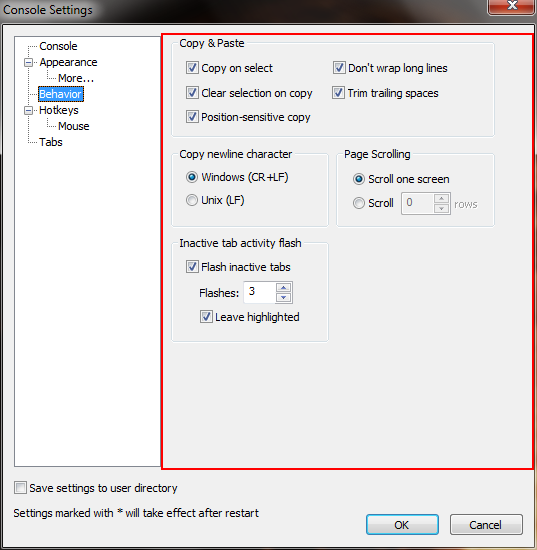

Copy on select
If checked, selected text will be copied and selection cleared afer you finish selecting the text.
Clear selection on copy
If checked, the selection will be cleared right after being copied. For example, if Copy on select is not checked, you would need to either press Copy selection hotkey or perform Copy/clear selection mouse action to copy the selection to the system clipboard. If this checkbox is checked then the selection will be cleared right after you perform one of those actions. Otherwise, you will need to press Clear selection hotkey or perform Copy/clear selection mouse action to return to the normal mode.
Don't wrap long lines
If checked, long lines will not be wrapped. When a selected row doesn't end with a space, a line break will not be inserted before adding the next row.
Trim trailing spaces
If checked, trailing spaces in each copied line will be deleted.
Scroll one screen
Scroll X rows
Allows you to specify how much Console will scroll when clicking
scrollbars.
Scroll one screen will scroll one page (current row or column
count)
Scroll X rows will scroll Console window for the specified
number of rows.
Windows (CR+LF)
If selected the copy operation will convert the carriage return using the Windows convention.
Unix (LF)
If selected the copy operation will convert the carriage return using the Unix convention.
Flash inactive tabs
If checked, the inactive tabs flashes when some activities are detected in the corresponding console.
Falshes
Indicate the number of times an inactive tab will flash when some activities are detected in the corresponding console.
Leave highlighted
If checked, the inactive tab where some activities have been detected in the corresponding console will stay highlighted even if the activities have stopped.